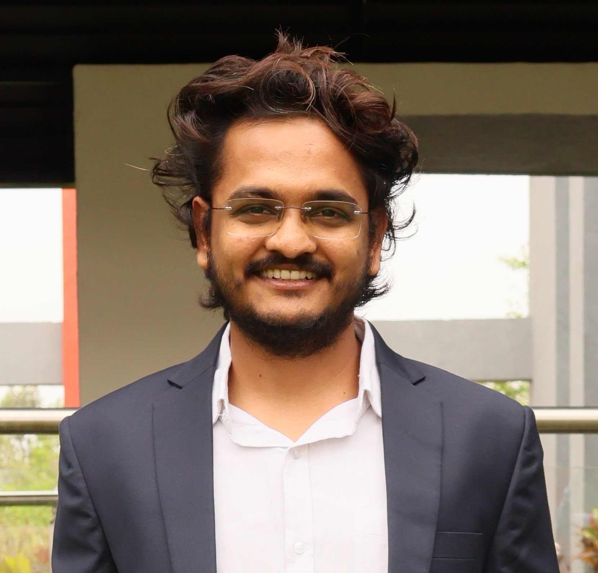
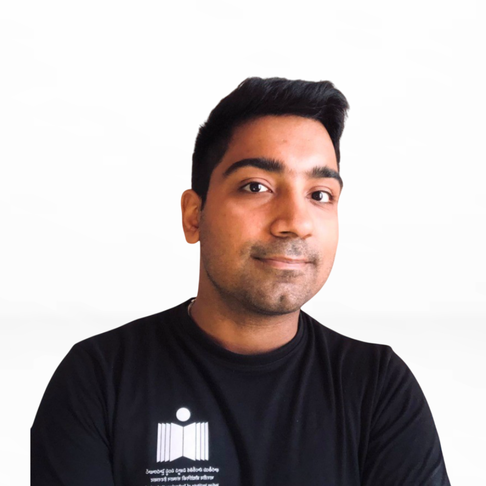

Indian Institute of Technology Hyderabad
Dynamics and Control Lab
People
Faculty, researchers, and students working across dynamics, control, and data-driven modeling.
Principal Investigator

Vishnu Rajasekharan Unni
Assistant Professor of Mechanical and Aerospace Engineering
Ph.D. in Department of Aerospace Engineering, Indian Institute of Technology Madras, India, 2013 - 2017
Dual Degree (B.Tech & M.Tech) in Aerospace Engineering, Indian Institute of Technology, Madras, India, 2007 - 2012
Email: vishnu.runni@mae.iith.ac.in
Research Scholars

Tathagat Sarangi
I’m Tathagat Sarangi, a member of Vishnu's group since its inception in 2022. I’m usually based in the research labs or at C Block 619. In addition to my work, I enjoy swimming, fitness training, cooking, and exploring new places through long drives and bike rides. I’m also an avid Formula One fan.
Email: me22resch11010@iith.ac.in

Yashwanth
I am interested in the junction of theoretical and practical aspects of aerial robotic systems. I am currently exploring RL-based optimal control strategies for UAVs.
I would love to collaborate on some additional projects (check out my GitHub) or we can grab a coffee if you enjoy math!
Email: yashwanth.contact@gmail.com
Misbah Tahir
My work at the DySCo Lab lies at the intersection of experimental aerodynamics and flight dynamics, with a particular focus on micro and nano UAV control and stability. Outside the lab, I enjoy reading novels.
Email: me24resch11015@iith.ac.in
Aditya Kumar Gupta
I am a Ph.D. researcher in Flight Mechanics at Indian Institute of Technology Hyderabad, with a strong academic background and research interest in Aerospace Engineering. My research focuses on the transition flight dynamics of Vertical Take-Off and Landing (VTOL) configurations designed for Air Taxi applications. Specifically, I investigate the aerodynamic, stability, and control challenges associated with the transition between vertical and forward flight. My work contributes to advancing Urban Air Mobility (UAM) technologies and the development of efficient, safe, and sustainable next-generation aerial transportation systems.
Email: me25resch11007@iith.ac.in
Edmeachew Ayal
Hello! I’m Edmeachew, a Ph.D. scholar from Ethiopia working in the DysCo Lab under the guidance of Vishnu R. Unni. My research focuses on machine learning–based energy management to maximize the flight endurance of solar-powered UAVs using forecast-informed deep reinforcement learning. I feel fortunate to work under Dr. Vishnu Unni’s guidance and to be part of the DysCo Lab. Outside the lab, I enjoy reading business-oriented books, exercising, and spending time with my family.
Email: me25resch16001@iith.ac.in
Dual Degree Students (Undergrad+Grad)

Harishankar M
I am a Dual Degree student (BTech + MTech) in the Dysco Lab, where I explore the effects of topological variations in network dynamics. Outside the lab, I enjoy travelling, watching movies, and listening to music. I’m passionate about connecting scientific discovery with real-world impact and love collaborating with others to solve challenging problems.
Email: ee21b25m100001@iith.ac.in
LinkedinNeeraj Balachandar
I am a junior year undergrad student in MechE with a minor in Robotics at IIT Hyderabad. Welcome to my portfolio webpage. Have a good time scrolling through!
Email: neerajbalachandar@gmail.com
Graduate Students
Mandar Mane
Hello! I’m Mandar, currently a second-year M.Tech (RA) student in Aerospace Engineering. My research focuses on unsteady aerodynamics and measurement techniques, with hands-on work in developing seeding systems for flow visualization using Particle Image Velocimetry (PIV), along with experimental aerodynamics using conventional anemometry. I also have experience in UAV aeromodelling through student team projects during my undergraduate studies
Outside the lab, I enjoy reading mythological sci-fi novels, stargazing and researching astronomy-related paraphernalia, as well as keeping up with Formula 1. More recently, I’ve also been enjoying spending time at the gym.
Email: me24mtech12010@iith.ac.in
LinkedinManthan Suryvanshi
Hi! I’m Manthan, and I’m in my second year of M.Tech in Aerospace Engineering. I spend most of my time designing and modeling wind generator, diving into aerodynamics, and figuring out how to make propellers and fans perform better. When I’m not in the lab, you’ll find me playing cricket—it's one of my favorite pastimes! And if I’m not on the field, I’m probably roasting my favorite people somewhere.
Email: me24mtech11032@iith.ac.in

Sai Japesh Rao Gopu
Passionate aerospace engineer focused on the design and development of unconventional UAVs. My work centers on bridging the gap between theoretical aerospace engineering and practical, real-world applications.
Email: japesh1410@gmail.com

Vivek Yadav
I completed my B.Tech in Aerospace Engineering and am currently pursuing an M.Tech Techno-Entrepreneurship at IIT Hyderabad
Email: em24mtech11002@iith.ac.in
Ravula Siri Reddy
I am Ravula Siri Reddy, pursuing my M.Tech in Power Electronics and Power Systems at IIT Hyderabad. Over the past year, I have been associated with the DySCo Lab, where I gained valuable research and practical experience.
I bring strong technical expertise, leadership ability, and a collaborative mindset, ensuring tasks are completed with precision and efficiency. Beyond academics, I am passionate about traveling, music, and badminton.
Email: ee25mtech12014@iith.ac.in
Akash Mavurapu
I have finished my B.Tech. in Electronics and Communication Engineering. My Mtech specialization is in Power Electronics and Power Systems. Currently working on Control system for Unsteady wind wall using FPGA.
Previous projects are Custom Flight Controller for Unmanned Aerial and Ground Vehicles, Radio Transceivers, Signal amplifiers. Unmanned Aerial and Ground vehicles, Power Distribution and measurement board for cargo drones.

Akhila Shibu
I am Akhila Shibu, an M.Tech (RA) student in Aerospace Engineering with hands-on experience in the design, modeling, and experimental analysis of structural systems. My work focuses on the intersection of structural design and aerodynamic experimentation, where engineered systems are modeled and validated through laboratory studies. I use engineering tools such as SolidWorks, CATIA V5, and Fusion 360 for CAD modeling and design. Beyond engineering, I write my thoughts into poems and enjoy playing chess.
Satyadarshi Das
Hello! I'm Satyadarshi, currently pursuing an M.Tech in Aerospace Engineering at IIT Hyderabad. I completed my B. Tech in Mechanical Engineering, and my academic interests lie in aerothermodynamics and flight mechanics, particularly in understanding high-speed flows and flight dynamics. Outside the lab, you will usually find me playing football, checkmating opponents in chess, lifting weights, or playing FPS games.
Sanjai V
Hello, I'm Sanjai, currently pursuing an M.Tech in Aerospace Engineering at IIT Hyderabad. I completed my B.Tech in Aerospace Engineering, and my academic interests lie in control systems, flight mechanics, and robotics, particularly in understanding the dynamics and control of complex mechanical and aerospace systems. I am interested in problems involving rigid body dynamics, autonomous systems, and the integration of perception and control for robotic and aerospace applications. In my free time, I enjoy watching TV shows, playing football, and closely following Formula 1.
Junior Research Fellow
Ashik Lal Krishna
At DysCo Lab, I work on data-driven modelling of dynamical systems, where complex behaviour emerges from simple interacting components. I am particularly interested in developing methods to investigate and control emergent behaviour across physical, biological, and engineering domains, with a primary focus on thermoacoustic instability in combustion systems.
Outside the lab, I spend a disproportionate amount of time watching films that I confidently recommend and only partially understand. I try to read beyond my comprehension and engage with culture at a distance safe enough to form strong opinions that no one asked for, while remaining comfortably unmoored from any actual social life. I also like to indulge in long, meandering conversations that exhibit neither coherence nor convergence. If you need to find me, I am usually at C-617, likely occupied with something of questionable value.
Email: ashiklal002@gmail.com
Linkedin, GitHubYogita Dhadphale
I am Yogita Dhadphale, a Junior Research Fellow with a background in software engineering and data analysis. I also enjoy outdoor activities and sports in my free time.

Nitish Kashyap
Building plasma propulsion systems for satellites and deep-space missions. The work revolves around turning research into working hardware – designing, simulating, and testing what could power the next generation of spacecraft.
The larger aim is to push India forward in space propulsion and make deep-tech more accessible for real missions.
Project Staffs

M.Madhusudhan Reddy
Ive completed my B.Tech in Electronics and Communication Engineering. Currently working as project assistant in Dysco Lab. I am working in Runway monitoring system project.

V Naresh
Myself Naresh currently working as a Project Assistant in the Mechanical & Aerospace Department at IIT Hyderabad. I involved in supporting research & developing activities related to Electronics Embedded System, Instrumentation, Soldering works etc,.
Abhinav TJ
I am working as a project assistant in mechanical and aerospace department at iit hyderabad

Dhinesan SK
Off the clock, I try mastering the fine art of sleep, embrace an interest-free lifestyle while keeping my hobbies undefined.
Kranthikiran
I am Kranthikiran, a Mechanical Engineering graduate currently working as a Project Assistant in the Department of Mechanical and Aerospace Engineering at IIT Hyd, contributing to engineering projects and research activities.
Project Intern
Akhin
I am Akhin P Ajay, currently pursuing my M.Tech in Manufacturing and Automation at the College of Engineering Trivandrum, with a B.Tech in Mechanical Engineering (Production). I have one year of experience as a Project Associate at IIT Madras in Applied Mechanics, where I gained strong practical and analytical skills. My interests lie in design, manufacturing, and production, and I am proficient in tools such as SolidWorks, AutoCAD, Fusion 360, Siemens NX, Autodesk Inventor, and Creo Parametric. I also completed an internship in additive manufacturing at the Rocket Fabrication Facility (RFF), VSSC Trivandrum. I bring strong leadership, team management, and problem-solving abilities, along with a collaborative mindset, and enjoy traveling, playing badminton, and driving in my free time.
Email: akhinpajay9631@gmail.com
Linkedin